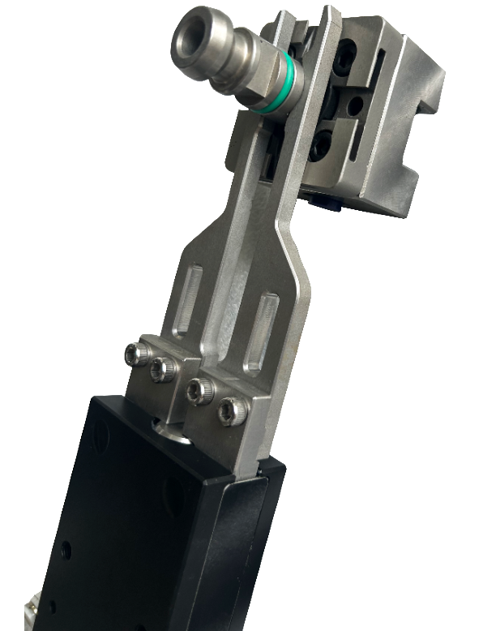

End-of-arm tooling and grippers engineered for unattended machining cells — built to integrate directly with your existing tool-changer or robot flange, with the compatibility and documentation your team needs to specify with confidence.

300N clamping force, ±0.10mm repeatability, ≤0.15s switching time. Fail-safe spring-locked holding for automated mold machining.
VIEW FULL SPEC SHEET →Tell us your application and we'll recommend the right tooling — reply within 24 hours.
Request a Quote